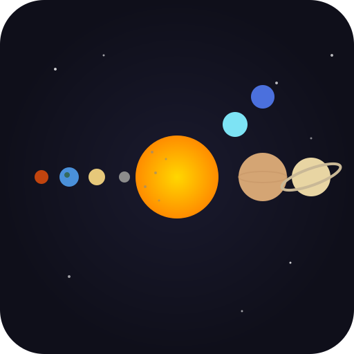

W avanti · S indietro · A/D laterali · Scroll zoom · O osservatorio · X missioni · P impostazioni
Sistema Solare al centro (giallo)
Stelle vicine (punti colorati)
Hyperlanes (linee blu tra stelle)
Click su stella per zoomare
W avanti · S indietro · A/D laterali · Frecce equivalenti
Scroll per zoom in/out